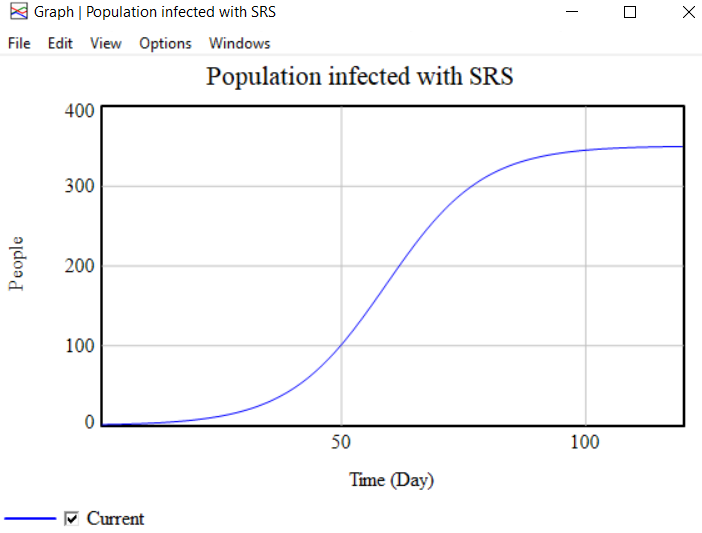

The SIR model is a simple mathematical model of epidemics. An epidemic is when the number of people infected with a disease is increasing in a population. S, I, and R stand for:
The SIR model is used where individuals infect each other directly (rather than through a disease vector such as a mosquito). An individual who recovers from the illness is also modeled to have perfect immunity to the disease thereafter. Contact between people is also modeled to be random.
The rate that people become infected is proportional to the number of people who are infected, and the number of people who are susceptible. If there are lots of people infected, the chances of a susceptible coming into contact with someone who is infected is high. Likewise, if there are very few people who are susceptible, the chances of a susceptible coming into contact with an infected is lower (since most of the contact would be between the non-susceptible people--either infected or resistant).
The image below shows working of SIR Model
This is the graph of population infected with the disease
